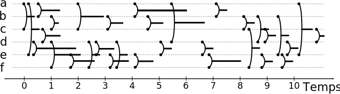

Au cours de ma thèse, j'ai étudié le problème de la détection de communautés dans les séquences d'interactions.
Une interaction est définie par deux entités, l'instant où l'interaction a lieu et éventuellement une durée.
L'étude de ce type de donné dans la littérature est encore récente et il n'existe aucune taxonomie faisant consensus.
On peut représenter une séquence d'interactions de la façon suivante :

J'ai pris le parti de considérer le formalisme de flots de liens et avec ce formalisme, de considérer les partitions de liens comme structures communautaires.
À partir de ce présupposé, j'ai défini plusieurs métriques et décrit des structures communautaires existantes avant de proposer une méthode d'évaluation de la pertinence d'un groupe.
Enfin, j'ai également entamé les premiers travaux de génération de flots de liens avec une structure communautaire.
En menant ces travaux liant théorie et application, j'ai constamment partagé les résultats obtenus: les données récoltées, la théorie proposée et l'implémentation développée.
Avec cette démarche, j'espére ainsi faciliter les échanges entre chercheurs pour faire avancer la recherche dans ce domaine ouvert où beaucoup reste à faire, tant au niveau théorique que pratique.
Mon manuscript de thèse est en franças et est acessible ici.
Les slides de ma présentation sont la.
Encadrants : Clémence Magnien et Matthieu Latapy.
Lieu: LIP6 dans l'équipe complexNetwork.